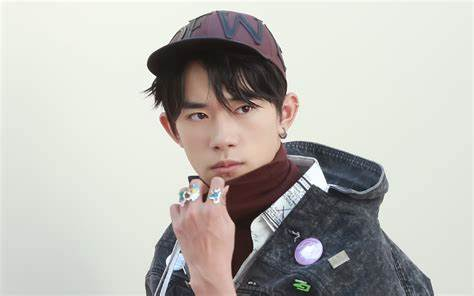

易烊千玺
易烊千玺（英语：Jackson
Yee；2000年11月28日－），中国歌手、演员及舞者，出生于湖南省怀化市。易烊千玺本姓为易，烊于湖南方言中有“欢迎”之意，即是为了迎接、纪念出生于2000年千禧年，故取名为易烊千玺。
重要事件
- 2005年，首登电视荧屏，开始参演各类综艺节目。
- 2009年，加入“飞炫少年”组合，两年后退出。
- 2013年6月，加入TF家族，8月以“TFBOYS”组合成员身份出道。
- 2019年，登上中国福布斯名人榜第八名。
-
2020年，凭电影《少年的你》获得第39届香港电影金像奖最佳新演员以及收获最年轻影帝提名,第35届大众电影百花奖最佳新人,2020年荣登福布斯中国名人榜第一名。
成就和荣誉
- 2014年，在第六届北京欢乐谷街舞大赛中获得团体齐舞冠军。
-
2015年，在两岸男神榜中获得小鲜肉冠军和年度人气大赏亚军；在青春励志人物评选中获得冠军；在东方男神榜中获得冠军；在国民表达大数据报告中获得年度最热议男星第三名；在全员加速中第一季中获得总冠军。
-
2016年，在网易LOFTER年度明星票选中获得冠军；在第十六届音乐风云榜中获得年度最受欢迎偶像、新偶像、综艺偶像；在2016亚洲十大演员总评榜中获得第十名；在2016微博电影之夜中获得影人榜冠军；在2016百度百科史记中获得年度十大明星之首。
-
2017年，易烊千玺的歌曲《你说》和歌曲《离骚》荣获亚洲新歌榜2017年度盛典年度十大金曲，歌曲《Billboard
Radio China》获得2017年度华语金曲。
-
2018年，在2018爱奇艺尖叫之夜年度盛典中获得年度男歌手奖；在第十五届MAHB年度先生盛典中成为年度偶像；在V影响力峰会中获得微博2018十大影响力制片人。
-
2019年，在2019福布斯中国名人榜中获得第八名；电影《少年的你》登上2019中国年度新锐榜第8届中国大学生电视节；凭借电视剧《长安十二时辰》在第8届中国大学生电视节中获得最受大学生瞩目电视剧男演员奖；在第26届华鼎奖中获得全国十佳观众最喜爱电视演员。
-
2020年，在2019年度电影频道M榜中获得最具潜力男演员奖(少年的你)；在第39届香港电影金像奖中凭借电影《少年的你》获得最佳新演员；在第35届大众电影百花奖中获得最佳新人奖；在第30届中国电视金鹰奖中获得最佳男演员、观众喜爱男演员《长安十二时辰》提名。
影视作品
| 日期 |
剧名 |
角色 |
| 2010年 |
《铁梨花》 |
张吉安（幼年） |
| 2011年 |
《超装备小子》 |
祥仔 |
| 2014年 |
《高科技少女喵》 |
李柯男的弟弟 |
|
《万万没想到》第二季 |
自习室超修学霸、少年总裁 |
| 2016年 |
《青云志》 |
小七 |
|
《小别离》 |
宋云哲 |
|
《超少年密码》 |
谌浩轩 |
| 2017年 |
《思美人》 |
屈原（幼年） |
|
《我们的少年时代》 |
尹柯 |
| 2019年 |
《长安十二时辰》 |
李必 |
| 2020年 |
《热血同行》 |
阿易 |
生活照

生平
演员时期 (2018-至今)
2018年2月24日，加盟优酷《这！就是街舞》街舞选拔类真人秀担任明星队长。4月11日，中央戏剧学院公布了2018年艺术类考试合格名单，易烊千玺于话剧影视表演专业中获得第一名。6月25日，易烊千玺工作室公布其高考成绩为全国一卷473分，成为表演系考生中的专业、文化成绩双料第一，被中央戏剧学院表演系话剧影视表演专业录取。7月，出演首部担正主演的电影《少年的你》，并发行单曲《丹青千里》。
2019年，在福布斯发布的中国100名人榜，名列第8名。10月25日，与周冬雨联合主演的青春片《少年的你》以票房超15亿登顶华语影史青春片票房冠军。11月19日，于第28届中国金鸡百花电影节开幕式以“星辰大海——电影频道青年演员计划”32位青年演员之一亮相。12月22日，于上海东方体育中心举办第一场个人演唱会“玊尔”。2020年1月24日，第五次登上中央广播电视总台春节联欢晚会，并首次以个人身份表演歌舞《青春的起点》。
2020年，凭曾国祥执导的电影《少年的你》提名香港电影金像奖最佳男主角、获得最佳新演员奖，并且成为年纪最轻的最佳男主角提名者以及首位拿下最佳新演员奖的内地男演员。